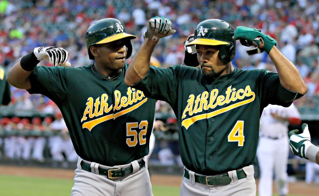

Moneyball: A Statistical Gamble

The Oakland Athletics were never always bad. Yes, their 50-112 losing record in the 2023 season and the .309 winning percentage (both the worst in the MLB), speak absolute volumes about the distressful situation they are currently in; many are quick to blame the management and they are probably correct, however, in the early 2000s one could argue that they were the best-managed team behind the scenes. The numbers even back this up, having the longest winning streak of the 21st century at 20 games and tied for 5th all-time. This was accomplished as it was more than just good players or a good manager in the dugout. It was the Moneyball approach that worked so heavily in Oakland’s favor.
It is most commonly believed that the spread of sports analytics started in Baseball with the fathers of it being Billy Beane, the front office executive of the Oakland Athletics, and Paul DePodesta the front office assistant of the organization during the 2002 season. The methodology of Moneyball is to pick up undervalued players for cheap and build the framework for a team that fits into the team's style, calculated by a linear regression model.
This was suitable given the limited budget the A’s were working with and looking more so at a player's potential rather than their current statistics. This risk does not always pay off, however when calculated correctly, there are diamonds in the rough. The statistical model plotted out a series of games and the type of caliber players needed to win, taking into account players with high chances of landing on bases, and batting averages.
Prior to the season and through calculations, Beane estimated that the A’s needed 95 wins and to score 135 runs to make it to the playoffs. They won 103 games (103-59 record with a .636 winning percentage) and were second in the MLB entering the postseason. Although they were beaten in the Divisional Round, this was a far cry from their 1998 season just four years prior where they were sitting at a 74-88 record with a .457 winning percentage. Yes, this is a respectable season but not enough to make it to the playoffs.
In sports good enough isn’t enough, so the management office chasing statistical domination was one of the reasons for their early 2000’s success. Their slow descent in form can be attributed to their change in owner, as they were bought out in 2005, and poor financial management. The formulas utilized during this notable run are conveyed by Samford University; this spread throughout the MLB and eventually to other leagues and sports teams opening up sports analytics departments.
One of the other leagues embracing this new technology is the English Premier League which has two teams punching well above their weight: Brentford FC, and Brighton and Hove Albion. Their owners, Tony Bloom for Brighton and Matthew Benham for Brentford were professional gamblers before buying majority stakes in their clubs, so they understand when and where to take risks which is where Moneyball flourishes.
While Brentford plays more direct soccer and Brighton more possession-based, both have a limited budget (€90 million and €96 million respectively) and have signed some talented players in Kaoru Mitoma for Brighton and Bryan Mbeumo for Brentford. These different styles of play are analyzed further by Opta Analyst in Brighton and Brentford: Two Smart Clubs Who Play the Game in Opposite Ways, which is well worth reading in full. For context, the biggest spenders in the Premier League during last season's transfer windows were Chelsea at £434.5 million (€506.15 million) and they finished in the bottom half of the table while Brentford and Brighton finished in the top half, above Chelsea.
What makes this even more impressive is that Brentford was in the second division (the Championship) of English Soccer. Their first real season was in the 2021-2022 season where they placed 13th; respectable for their first-ever Premier League season since 1946. It’s more than tactics, good players, good coaches and managers, team culture, and money. Although all of that is important and can be a major factor in winning, proper management can do wonders for a team.